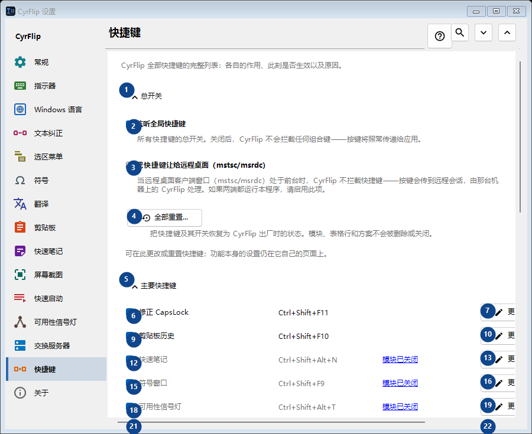
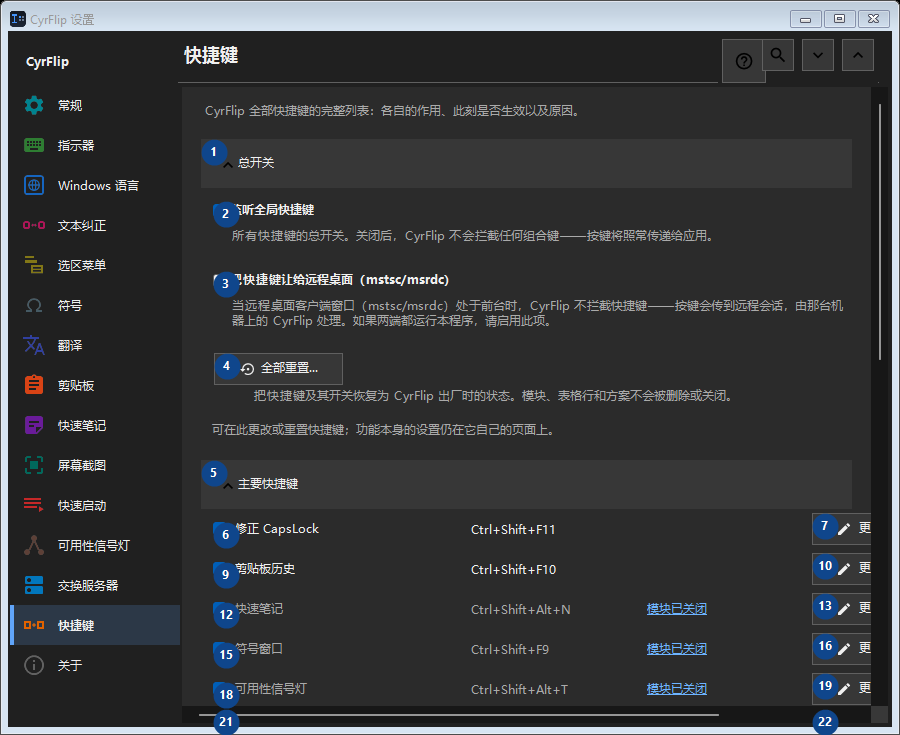

快捷键
用途
CyrFlip 全部快捷键的完整列表：各自的作用、此刻是否生效以及原因。


使用顺序
设置立即生效，无须按固定顺序操作；请使用以下分组。
界面元素
1. 总开关
需要执行上述操作时使用此命令。接受前请阅读确认提示。
你的快捷键2. 监听全局快捷键
所有快捷键的总开关。关闭后，CyrFlip 不会拦截任何组合键——按键将照常传递给应用。
你的快捷键3. 把快捷键让给远程桌面（mstsc/msrdc）
当远程桌面客户端窗口（mstsc/msrdc）处于前台时，CyrFlip 不拦截快捷键——按键会传到远程会话，由那台机器上的 CyrFlip 处理。如果两端都运行本程序，请启用此项。
你的快捷键4. 全部重置...
把快捷键及其开关恢复为 CyrFlip 出厂时的状态。模块、表格行和方案不会被删除或关闭。
你的快捷键5. 主要快捷键
需要执行上述操作时使用此命令。接受前请阅读确认提示。
你的快捷键6. 修正 CapsLock Ctrl+Shift+F11
需要执行上述操作时使用此命令。接受前请阅读确认提示。
你的快捷键7. 更改... - 修正 CapsLock Ctrl+Shift+F11
需要执行上述操作时使用此命令。接受前请阅读确认提示。
你的快捷键8. 设为默认 - 修正 CapsLock Ctrl+Shift+F11
需要执行上述操作时使用此命令。接受前请阅读确认提示。 此控件当前不可用。请先启用相应功能或选择条目。
你的快捷键9. 剪贴板历史 Ctrl+Shift+F10
需要执行上述操作时使用此命令。接受前请阅读确认提示。
你的快捷键10. 更改... - 剪贴板历史 Ctrl+Shift+F10
需要执行上述操作时使用此命令。接受前请阅读确认提示。
你的快捷键11. 设为默认 - 剪贴板历史 Ctrl+Shift+F10
需要执行上述操作时使用此命令。接受前请阅读确认提示。 此控件当前不可用。请先启用相应功能或选择条目。
你的快捷键12. 快速笔记 Ctrl+Shift+Alt+N
需要执行上述操作时使用此命令。接受前请阅读确认提示。
你的快捷键13. 更改... - 快速笔记 Ctrl+Shift+Alt+N
需要执行上述操作时使用此命令。接受前请阅读确认提示。
你的快捷键14. 设为默认 - 快速笔记 Ctrl+Shift+Alt+N
需要执行上述操作时使用此命令。接受前请阅读确认提示。 此控件当前不可用。请先启用相应功能或选择条目。
你的快捷键15. 符号窗口 Ctrl+Shift+F9
需要执行上述操作时使用此命令。接受前请阅读确认提示。
你的快捷键16. 更改... - 符号窗口 Ctrl+Shift+F9
需要执行上述操作时使用此命令。接受前请阅读确认提示。
你的快捷键17. 设为默认 - 符号窗口 Ctrl+Shift+F9
需要执行上述操作时使用此命令。接受前请阅读确认提示。 此控件当前不可用。请先启用相应功能或选择条目。
你的快捷键18. 可用性信号灯 Ctrl+Shift+Alt+T
需要执行上述操作时使用此命令。接受前请阅读确认提示。
你的快捷键19. 更改... - 可用性信号灯 Ctrl+Shift+Alt+T
需要执行上述操作时使用此命令。接受前请阅读确认提示。
你的快捷键20. 设为默认 - 可用性信号灯 Ctrl+Shift+Alt+T
需要执行上述操作时使用此命令。接受前请阅读确认提示。 此控件当前不可用。请先启用相应功能或选择条目。
你的快捷键21. 屏幕区域截图 Ctrl+F12
需要执行上述操作时使用此命令。接受前请阅读确认提示。
你的快捷键22. 更改... - 屏幕区域截图 Ctrl+F12
需要执行上述操作时使用此命令。接受前请阅读确认提示。
你的快捷键23. 设为默认 - 屏幕区域截图 Ctrl+F12
需要执行上述操作时使用此命令。接受前请阅读确认提示。 此控件当前不可用。请先启用相应功能或选择条目。
你的快捷键24. 全屏截图 Ctrl+F11
需要执行上述操作时使用此命令。接受前请阅读确认提示。
你的快捷键25. 更改... - 全屏截图 Ctrl+F11
需要执行上述操作时使用此命令。接受前请阅读确认提示。
你的快捷键26. 设为默认 - 全屏截图 Ctrl+F11
需要执行上述操作时使用此命令。接受前请阅读确认提示。 此控件当前不可用。请先启用相应功能或选择条目。
你的快捷键27. 区域截图并绘图 Ctrl+Alt+F12
需要执行上述操作时使用此命令。接受前请阅读确认提示。
你的快捷键28. 更改... - 区域截图并绘图 Ctrl+Alt+F12
需要执行上述操作时使用此命令。接受前请阅读确认提示。
你的快捷键29. 设为默认 - 区域截图并绘图 Ctrl+Alt+F12
需要执行上述操作时使用此命令。接受前请阅读确认提示。 此控件当前不可用。请先启用相应功能或选择条目。
你的快捷键30. 全屏截图并绘图 Ctrl+Alt+F11
需要执行上述操作时使用此命令。接受前请阅读确认提示。
你的快捷键31. 更改... - 全屏截图并绘图 Ctrl+Alt+F11
需要执行上述操作时使用此命令。接受前请阅读确认提示。
你的快捷键32. 设为默认 - 全屏截图并绘图 Ctrl+Alt+F11
需要执行上述操作时使用此命令。接受前请阅读确认提示。 此控件当前不可用。请先启用相应功能或选择条目。
你的快捷键33. 打开屏幕截图文件夹 Ctrl+F10
需要执行上述操作时使用此命令。接受前请阅读确认提示。
你的快捷键34. 更改... - 打开屏幕截图文件夹 Ctrl+F10
需要执行上述操作时使用此命令。接受前请阅读确认提示。
你的快捷键35. 设为默认 - 打开屏幕截图文件夹 Ctrl+F10
需要执行上述操作时使用此命令。接受前请阅读确认提示。 此控件当前不可用。请先启用相应功能或选择条目。
你的快捷键36. 用键盘打开菜单 Ctrl+Shift+Alt+M
需要执行上述操作时使用此命令。接受前请阅读确认提示。
你的快捷键37. 更改... - 用键盘打开菜单 Ctrl+Shift+Alt+M
需要执行上述操作时使用此命令。接受前请阅读确认提示。
你的快捷键38. 设为默认 - 用键盘打开菜单 Ctrl+Shift+Alt+M
需要执行上述操作时使用此命令。接受前请阅读确认提示。 此控件当前不可用。请先启用相应功能或选择条目。
你的快捷键39. 将剪贴板发送到服务器
需要执行上述操作时使用此命令。接受前请阅读确认提示。
你的快捷键40. 更改... - 将剪贴板发送到服务器
需要执行上述操作时使用此命令。接受前请阅读确认提示。
你的快捷键41. 设为默认 - 将剪贴板发送到服务器
需要执行上述操作时使用此命令。接受前请阅读确认提示。 此控件当前不可用。请先启用相应功能或选择条目。
你的快捷键42. 从服务器获取剪贴板
需要执行上述操作时使用此命令。接受前请阅读确认提示。
你的快捷键43. 更改... - 从服务器获取剪贴板
需要执行上述操作时使用此命令。接受前请阅读确认提示。
你的快捷键44. 设为默认 - 从服务器获取剪贴板
需要执行上述操作时使用此命令。接受前请阅读确认提示。 此控件当前不可用。请先启用相应功能或选择条目。
你的快捷键45. 鼠标
需要执行上述操作时使用此命令。接受前请阅读确认提示。
你的快捷键46. 更改... - 选区上的菜单 Ctrl + 鼠标右键
需要执行上述操作时使用此命令。接受前请阅读确认提示。
你的快捷键47. 设为默认 - 选区上的菜单 Ctrl + 鼠标右键
需要执行上述操作时使用此命令。接受前请阅读确认提示。 此控件当前不可用。请先启用相应功能或选择条目。
你的快捷键48. 布局转换
需要执行上述操作时使用此命令。接受前请阅读确认提示。
你的快捷键49. 翻译
需要执行上述操作时使用此命令。接受前请阅读确认提示。
你的快捷键50. 快速启动
需要执行上述操作时使用此命令。接受前请阅读确认提示。
你的快捷键51. Windows
需要执行上述操作时使用此命令。接受前请阅读确认提示。
你的快捷键